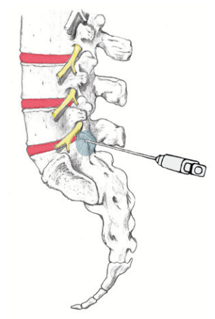
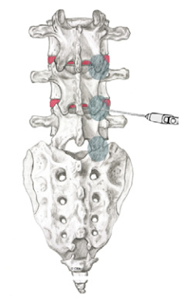
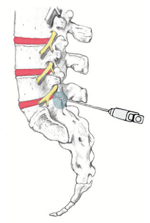
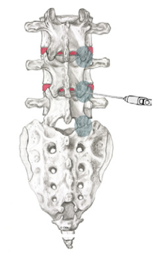

{kind=link}

 



{kind=link}
{kind=link}
A lumbar facet injection is an outpatient procedure for diagnosing and treating low back, buttock, hip, and groin pain. This information sheet will explain what it is. Your doctor can explain if it is for you.
What are lumbar facet joints?
Facet joints connect the vertebrae, the bones of the spine. They help guide your spine when you move. The low back area of the spine is called the lumbar region. It contains five vertebrae.
Facet joints are found on both sides of the spine. Each is about the size of a thumbnail. Lumbar facet joints are named for the vertebrae they connect and the side of the spine where they are found. The right L4-5 facet joint, for example, joins the 4th and 5th lumbar vertebrae on the right side.
What is lumbar facet joint pain?
You may feel pain if a lumbar facet joint is injured. Sometimes it feels like muscle tension. Other times it can be severe pain.
The cartilage inside the joint may be injured. Other times only connecting ligaments surrounding the joint are injured.
Facet pain also depends on which joint is affected. Lumbar facet joint pain can occur in an area from your low back down to your buttocks, groin and hips. The diagram shows areas of pain that are usually associated with lumbar facet injuries.
How do I know if I have lumbar facet pain?
If you have pain in one or more of these areas, and if your pain has lasted longer than two months, you may have lumbar facet pain. Common tests such as x-rays or MRIs may not always show if a facet joint is causing pain.
What is a lumbar facet injection?
In a lumbar facet injection, a local anesthetic (numbing medicine) and corticosteroid (anti-inflammatory medicine) are injected into one or more of your lumbar facet joints.
The injection can be used to diagnose or treat. An anesthetic and steroid may be injected to see if they temporarily lessen your pain. If they do, and if this helps you move better, it tells the doctor which facet joint may be causing the pain. The corticosteroid is used to treat inflammation of the facet joint.
What happens during an injection?
A local anesthetic will be used to numb your skin. The doctor will then insert a thin needle directly into the facet joint. Fluoroscopy, a type of x-ray, must be used to ensure the safe and proper position of the needle. A dye may also be injected to make sure the needle is at the correct spot.
Once the doctor is sure the needle is correctly placed, the medicine will be injected.
What happens after an injection?
You will be monitored for up to 30 minutes after the injection. When you are ready to leave, the staff will give you discharge instructions. You will also be given a pain diary. It is important to fill this out because it helps your doctor know how the injection is working.
It may help to move your back in ways that hurt before the injection, to see if the pain is still there, but do not overdo it. Take it easy for the rest of the day.
You may feel immediate pain relief and numbness in your back for a period of time after the injection. This tells you the medication has reached the right spot.
Your pain may return after this short pain-free period, or may even be a little worse for a day or two. It may be caused by needle irritation or by the corticosteroid itself. Corticosteroids usually take two or three days to start working, but can take as long as a week.
You can usually return to work the day after the injection, but always check with your doctor.
How long can I expect pain relief?
The extent and duration of pain relief may depend on the amount of inflammation and how many areas are involved. Other coexisting factors may be responsible for your pain. Sometimes an injection can bring several weeks to months of pain relief, and then more treatment is needed. Other times, particularly if there is no underlying bone or joint problem, one injection brings long-term pain relief. If your pain is caused by injury to more than one area, only some of your symptoms may be helped by one injection.
Back to top